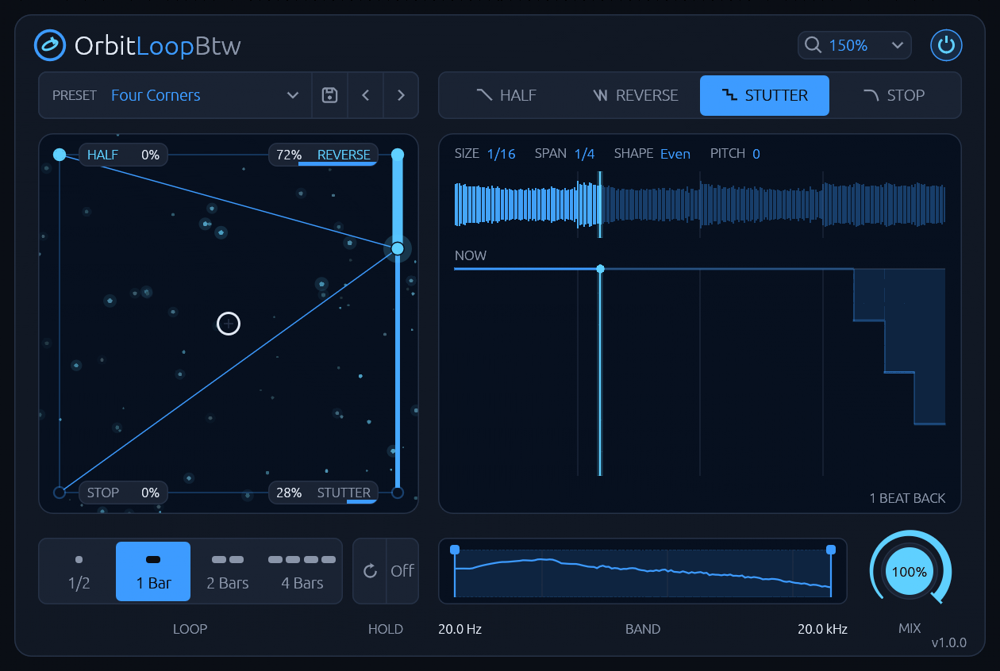
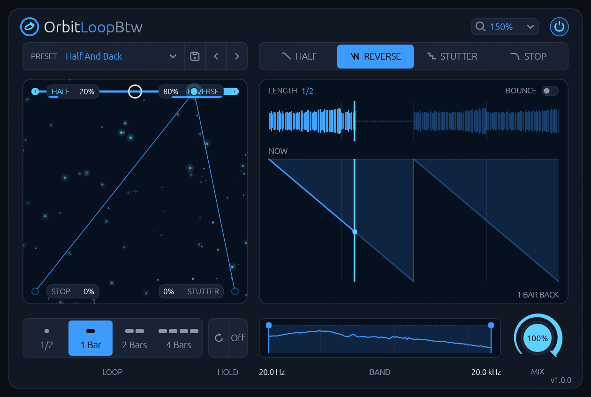
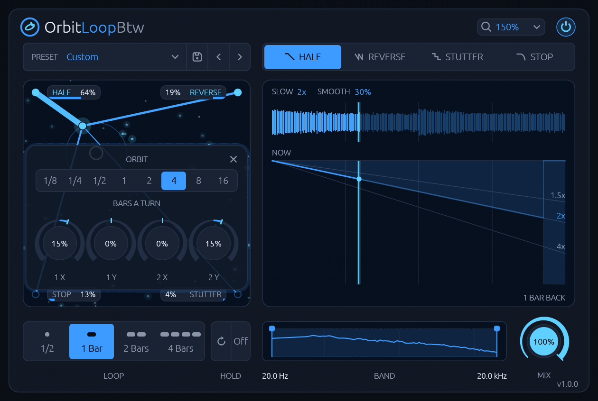
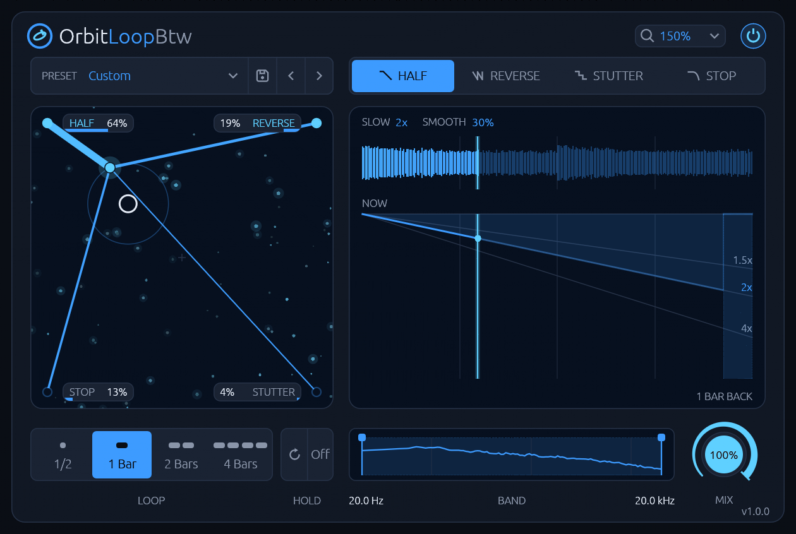
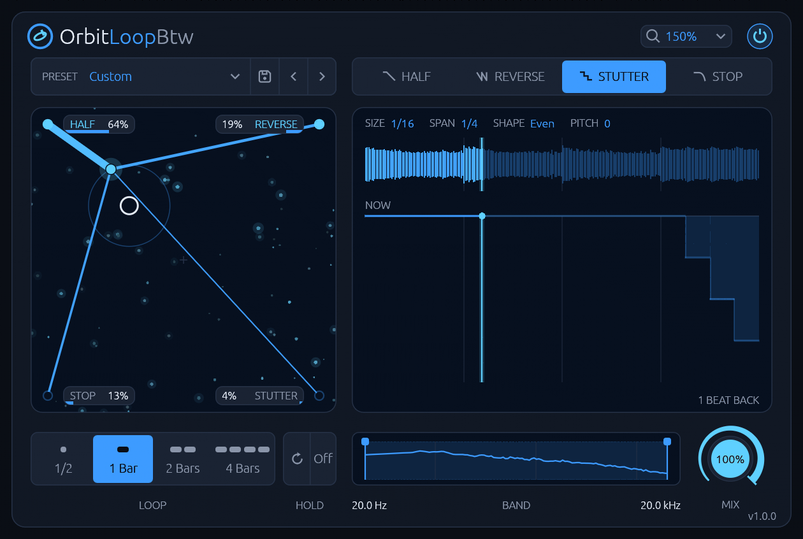
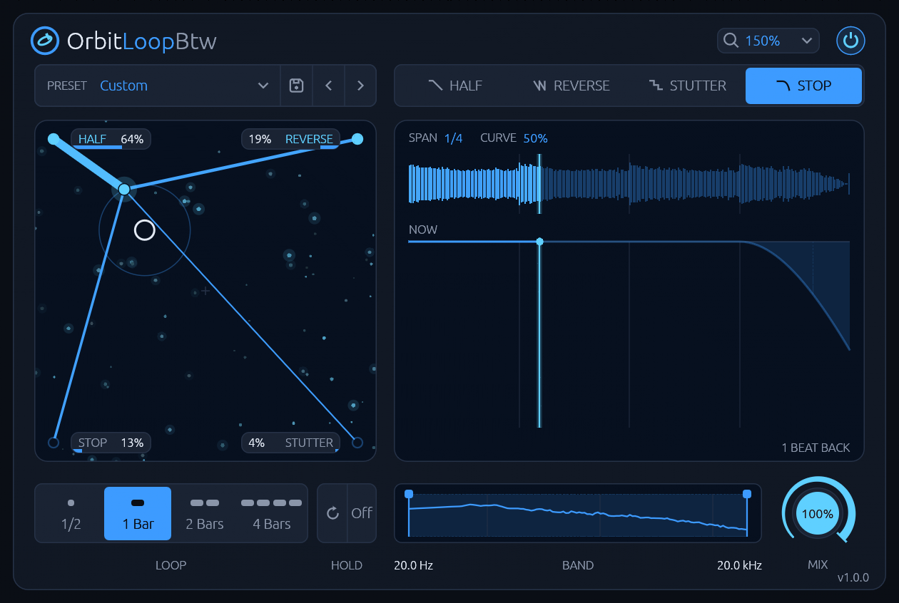

OrbitLoopBtw listens to what plays and loops it four ways at the same time: HALF plays it at half speed, REVERSE plays each beat backward, STUTTER repeats the end of the loop in ever shorter slices, and STOP brakes it like a tape machine switched off. Each effect sits in a corner of a pad, and one puck blends them. Leave the puck in a corner for one effect, put it between corners for a blend, or throw it and let it orbit, locked to the song, so the effects take turns. Every effect has its own page, a large display of where its read head goes over the loop. It has no latency: what isn't being cut plays as it comes in. It is not a sampler or a looper you record into: it always plays the last loop of what comes in.
Read the manual for every control and how to use it.
Screenshots












Features
- Four loop effects at once: HALF (1.5x, 2x or 4x slower), REVERSE (each 1/16 to 1 bar backward, or back and forth), STUTTER (the loop's end repeated in slices of 1/4 to 1/64, even, faster or slower, as they are or an octave down or up) and STOP (a tape stop over the loop's end, from a pitch glide to a slowing tape).
- A blend that stays as loud as its corners: between corners it is within 0.2 LU of the corners' own loudness. With the puck in a corner you hear that effect alone, bit for bit.
- An orbit locked to the song: throw the puck and it keeps going, round a circle or along a line, once in 1/8 to 16 bars. The same bar sounds the same every time, and a render repeats.
- HOLD: freezes the loop that just played; all four effects keep playing on it while the dry signal stays the song.
- A band for the effect: choose the range the effect plays in, 24 dB/octave edges; outside it the input passes. Keep the kick and the air, cut up the middle.
- No latency and no clicks: joins fade over 2 ms, and a changed setting is heard from the next slice, never mid-slice.
- Presets of the pad, the orbit, LOOP, every page, the band and MIX: eight built in beside Init, from a bar-end roll to a tape ending, and your own.
- Light: about 0.8 % of a CPU core at 48 kHz stereo.
- Zoom from 100 to 200 %, mono or stereo.
- No network access and no telemetry.
Install
Download the latest version from the Releases page, or with these commands:
curl -LO https://github.com/jelly-comet/OrbitLoopBtw-release/releases/download/v1.0.1/OrbitLoopBtw-1.0.1-linux-x86_64.tar.gz
curl -LO https://github.com/jelly-comet/OrbitLoopBtw-release/releases/download/v1.0.1/OrbitLoopBtw-1.0.1-linux-x86_64.tar.gz.sha256
sha256sum -c OrbitLoopBtw-1.0.1-linux-x86_64.tar.gz.sha256 && tar xzf OrbitLoopBtw-1.0.1-linux-x86_64.tar.gz
cd OrbitLoopBtw-1.0.1-linux-x86_64
Install for your user:
mkdir -p ~/.clap
rm -f ~/.clap/OrbitLoopBtw.clap && cp OrbitLoopBtw.clap ~/.clap/
Or for all users:
sudo mkdir -p /usr/lib/clap
sudo rm -f /usr/lib/clap/OrbitLoopBtw.clap && sudo cp OrbitLoopBtw.clap /usr/lib/clap/
Removing the old copy first avoids overwriting a file a running host has loaded. Then rescan plugins in your DAW.
To uninstall:
rm -f ~/.clap/OrbitLoopBtw.clap
Your presets stay in ~/.local/share/OrbitLoopBtw/presets/; delete that folder too if you want
them gone.
Requirements
- Linux x86-64 on a CPU with AVX2 (Intel Core from 2013, AMD from 2015), with glibc 2.31 or newer (Ubuntu 20.04, Debian 11, Fedora 32 and newer)
- A CLAP host
- X11 or XWayland, and a Vulkan driver for the editor
Releases contain the CLAP plugin only.
License
MIT, see LICENSE. The licenses of the third-party code in the binaries are in
THIRD-PARTY-LICENSES.txt in each release archive.
CLAP is an open standard by the free-audio project. OrbitLoopBtw is an independent project, not affiliated with or endorsed by the makers of any other loop or stutter effect.